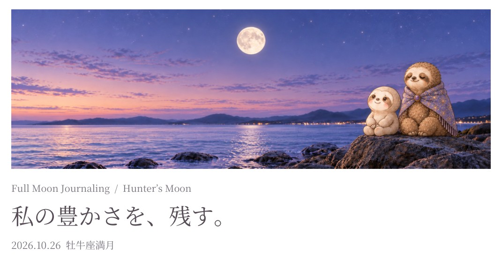

🖨️ PDFで保存 / 印刷する

✍️ そのまま書き込めます。書いた内容は、この端末の中だけに自動で保存されます。
01
いま、私を満たしてくれているものは？
02
「仕方ない」で、がまんしていることは？
03
その中で、少しゆるめられそうなことは？
04
これからも、そばに残したい豊かさは？
すべての問いに答えなくても大丈夫です。
心に残った問いをひとつ、ゆっくり眺めてみてくださいね 🌿
🖨️ PDFで保存 / 印刷する